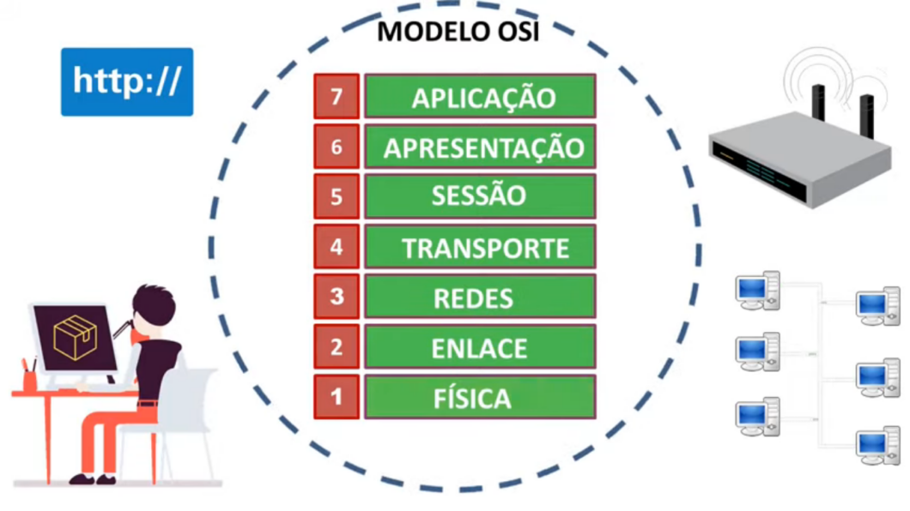
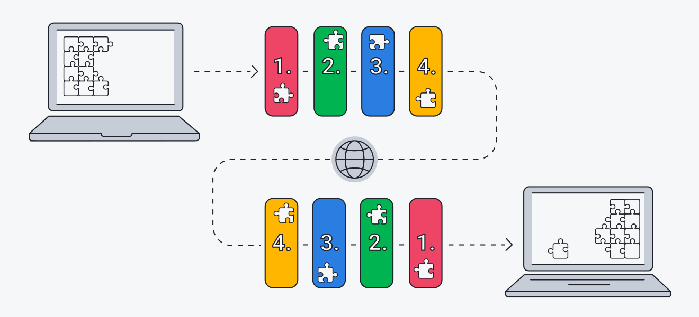
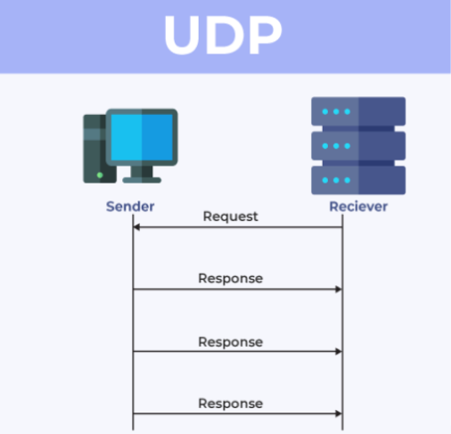
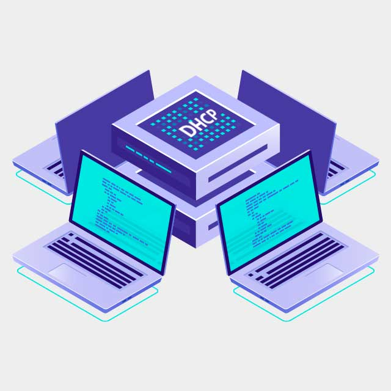

Esse site irá apresentar alguns serviçoes de rede citados abaixo
MODELO OSI
O modelo de interconexão de sistemas abertos (OSI) é um modelo conceitual criado pela Organização Internacional de Normalização que permite que diversos sistemas de comunicação se comuniquem usando protocolos padronizados. Em poucas palavras, o OSI fornece um padrão para que diferentes sistemas de computadores possam se comunicar.
O modelo OSI pode ser considerado a linguagem universal da rede de computadores. Ele se baseia no conceito de dividir um sistema de comunicação em sete camadas abstratas, empilhadas umas sobre as outras.

7. Camada de aplicação:
Oferece protocolos que permitem que um software envie e receba informações significativas para os usuários. Por isso, é altamente usada por itens como navegador de internet e cliente de e-mail. Alguns exemplos: HTTP, FTP, POP e DNS.
6. De apresentação:
Essa camada faz a preparação dos dados para a camada de aplicações. Ou seja, garante que as informações possam ser usadas e faz toda a criptografia.
5. De sessão: É aqui que o modelo OSI cria os canais de comunicação entre dispositivos. como o próprio nome diz, essa camada é responsável por abrir sessões e garantir que tudo esteja funcional para que dados possam ser transferidos.
4. De transporte:
A camada de transporte pega os dados e os quebra em segmentos.
3. De rede:
A responsabilidade dessa camada é a de transmitir dados entre um host a outro em diferentes redes.
2. De enlace de dados:
É nesta parte que ocorre a conexão entre dois dispositivos conectados fisicamente em uma rede. Essa camada do modelo OSI é composta por duas partes: o controle de enlace lógico (LLC), que identifica e checa erros; e o media access control (MAC), que usa endereços MAC para conectar e definir permissões nos dispositivos.
1. Camada física: ela é responsável pela ligação de cabos físicos ou sem fio entre toda a rede. Outra característica é que a transmissão dos dados brutos é feita a partir daqui.
TCP/IP
TCP/IP significa protocolo de controle de transmissão/protocolo da internet (Transmission Control Protocol/Internet Protocol). TCP/IP é um conjunto de regras padronizadas que permitem que os computadores se comuniquem em uma rede como a internet.
IP é a parte que obtém o endereço para o qual os dados são enviados. TCP é responsável pela entrega dos dados assim que o endereço IP for encontrado.
Sempre que algo é enviado pela internet, como uma mensagem, uma foto ou um arquivo, o modelo TCP/IP divide os dados em pacotes de acordo com um procedimento de quatro camadas. Os dados passam primeiro por essas camadas em uma ordem e, em seguida, na ordem inversa, à medida que os dados são remontados no receptor.

1. Camada de acesso de rede: A camada de acesso de rede, também conhecida como camada de link de dados, lida com a infraestrutura física que permite que os computadores se comuniquem entre si pela internet.
2. A camada de internet: A camada de internet, também conhecida como camada de rede, controla o fluxo e o roteamento do tráfego para garantir que os dados sejam enviados com rapidez e precisão. Essa camada também é responsável por remontar o pacote de dados no destino.
3. Camada de transporte
A camada de transporte oferece uma conexão de dados confiável entre dois dispositivos de comunicação.
4. Camada de aplicativo:
A camada de aplicativo é o grupo de aplicativos que permite ao usuário acessar a rede. Para a maioria de nós, isso significa e-mail, aplicativos de mensagens e programas de armazenamento em nuvem. O usuário final vê e interage com ela ao enviar e receber dados.
UDP
O UDP é um método padronizado de transferência de dados entre dois computadores de uma rede. Em comparação com outros protocolos, o UDP realiza este processo de forma simples: envia pacotes (unidades de transmissão de dados) diretamente para um computador de destino, sem estabelecer uma conexão antes, indicando a ordem desses pacotes ou verificando se eles chegaram como previsto. (Os pacotes UDP são denominados "datagramas").
O UDP é mais rápido, mas menos confiável que o TCP, outro protocolo de transporte comum. Em uma comunicação TCP, os dois computadores começam estabelecendo uma conexão por meio de um processo automatizado chamado "handshake". Somente depois que esse handshake for concluído, um computador realmente transferirá pacotes de dados para o outro.
As comunicações UDP não passam por esse processo. Em vez disso, um computador pode simplesmente começar a enviar dados para o outro.

DNS
O DNS — do inglês Domain Name System — é uma sigla para sistema de nomes de domínio. Como o nome sugere, é um registro que contém nomes de sites e respectivos endereços IP associados. Essa correlação favorece a transferência de dados entre computadores e permite o acesso à internet. Em outras palavras, ele converte nomes de domínio legíveis por humanos (por exemplo, www.amazon.com) em endereços IP legíveis por máquina (por exemplo, 192.0.2.44).
DHCP
Protocolo DHCP (Dynamic Host Configuration Protocol), que nada mais é do que um provedor que faz com que as máquinas dentro de determinada rede consigam obter um endereço de IP de maneira automática.
A importância do DHCP está diretamente ligada à facilidade de configuração de uma rede que conta com grandes quantidades de dispositivos conectados. Para entender melhor essa ideia, imagine o seguinte cenário:
Você é um administrador de uma rede que tem 300 computadores conectados. Muita coisa, certo? Agora, pense que você precisaria fazer, de forma manual e individual, a atribuição de IP e de outros parâmetros em cada um desses dispositivos.
Parece trabalhoso, não é mesmo? E realmente é!
Mas, com o protocolo DHCP, o cenário se torna muito mais rápido e prático para os administradores. Afinal, seu principal objetivo é, justamente, facilitar esse processo.
É por meio deste protocolo que um servidor conseguirá fazer a distribuição automática dos parâmetros necessários sempre que eles forem solicitados para que uma conexão à rede seja feita.

FTP
A sigla FTP significa File Transfer Protocol ou Protocolo de Transferência de Arquivos. Esse protocolo é uma forma de comunicação entre computadores que usam o TCP/IP, que é o protocolo padrão de comunicação da web.
O protocolo FTP permite que usuários autorizados possam fazer download e upload de arquivos de um servidor FTP, um computador que armazena os dados. Dessa forma, o FTP facilita a transferência de informações entre diferentes dispositivos.
HTTP/HTTPS
O protocolo de transferência de hipertexto (HTTP – HyperText Transfer Protocol) é o protocolo padrão para a web. Por meio dele os navegadores requisitam as páginas da web e as recebem. Dessa forma, o HTTP define, entre outras formalidades, como são requisitadas as páginas da web, como são enviados os dados que o usuário insere em formulários e como o servidor envia mensagens de erro para o navegador do usuário.
HTTPS ou Hyper Text Transfer Protocol Secure, é um protocolo da internet que visa realizar a comunicação de dispositivos com os servidores do mundo todo. O protocolo HTTPS surgiu como uma evolução ao procolo antecessor o HTTP, a diferença entre eles é que o HTTPS possui a comunicação de dispositivos criptografada.
Por conta da criptografia, o HTTPS se torna um protocolo muito mais seguro, tanto que na maioria dos navegadores, sites que utilizam HTTPS, possuem a descrição Site Seguro e um cadeado fechado, simbolizando que aquele site possui um certificado SSL ativo( (Secure Socket Layer) que utiliza a tecnologia de criptografia entre servidor e cliente, onde impede a leitura de dados interceptados) e instalado. Isso, além de gerar segurança aos visitantes, acabou se tornando muito importante para que sites tenham um bom ranqueamento nas pesquisas do Google.
Web Server
Um servidor da web (web server) é responsável por hospedar o conteúdo do seu site, ou aplicação baseada na web para os usuários através da Internet. Podem ser imagens, textos, dados de aplicativos, vídeos, por exemplo.
Dessa forma, o navegador da web solicita dados do site, o que acontece quando o usuário clica em um determinado link ou clicar para baixar um documento que foi exibido no navegador.
Um servidor web é um sistema de computador que processa solicitações via http, o protocolo básico de rede usado para distribuir informações na world wide web.
Um servidor web é um sistema de computador que processa solicitações via http, o protocolo básico de rede usado para distribuir informações na world wide web.
O termo pode se referir também a todo o sistema ou especificamente ao software que aceita e supervisiona as solicitações http.
Cisco Packet Tracer
Esse trabalho foi solicitado para ser realizado no Packet Tracer,do qual, deveria possuir três servidores: um servidor dhcp,um servidor dns e um servidor Web que o site estaria hospedado. Segue print do solicitado: